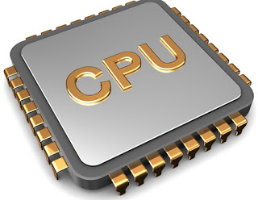

CPU

In elettronica e informatica l'unità centrale di elaborazione (o processore centrale, in inglese central processing unit, sigla CPU) è, secondo l'architettura di von Neumann di un calcolatore, l'unità o sottosistema logico e fisico, attualmente implementata attraverso un microprocessore digitale general purpose basato tipicamente su un'architettura a registri generali, che sovraintende alle funzionalità logiche di elaborazione principali del computer, contrapponendosi a tutte le altre unità di elaborazione secondarie presenti nelle architetture hardware dei computer ovvero le varie schede elettroniche (scheda audio, scheda video, scheda di rete, coprocessore e processore di segnale digitale). Ha dunque il compito di eseguire le istruzioni di un programma presente nella ROM in fase di boot, nella memoria centrale (o primaria, es. RAM) dopo averlo prelevato dalla memoria secondaria (o di massa) o da altri dispositivi: durante l'esecuzione del programma l'unità legge o scrive dati direttamente da o nella memoria centrale; il risultato dell'esecuzione finale dipende dal dato su cui si opera e dallo stato interno in cui la CPU stessa si trova e può mantenere la traccia delle istruzioni eseguite e dei dati letti (vedi cache).